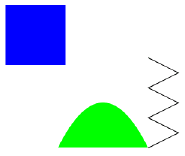

Class: SimpleTutorial

This tutorial shows how to construct a JCanvas and place figures on it. In this example, we create figures with a few different shapes, using the BasicFigure class in diva.canvas.toolbox, which takes an instance of Shape (an interface defined in the Java AWT) and draws it on the screen using given colors and strokes.
As noted earlier, each JCanvas contains by default an instance of GraphicsPane. To get the graphics pane from a JCanvas:
GraphicsPane graphicsPane = (GraphicsPane)canvas.getCanvasPane();The pane contains several layers, one of which is a foreground FigureLayer upon which figures are drawn and interacted with. To get the figure layer:
FigureLayer layer = graphicsPane.getForegroundLayer();
There are three figures on the screen, each created using a different kind of shape. The code to create a rectangle and add it to the figure layer is:
Figure rectangle = new BasicRectangle(10,10,100,100,Color.blue); layer.add(rectangle);The code to create the curved shape is more complex, and uses an instance of java.awt.geom.GeneralPath.
GeneralPath path = new GeneralPath(); path.moveTo(120,240); path.lineTo(240,240); path.quadTo(180,120,120,240); path.closePath(); Figure semi = new BasicFigure(path, Color.green); layer.add(semi);The third figure is much the same, but uses an instance of diva.util.java2d.Polyline2D. Polyline2D is more efficient than GeneralPath, and should be used anytime only straight-line segments are needed.